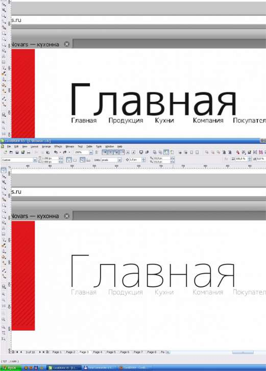

Меняется вид шрифта при просмотре Wireframe и Enchanced
Zigzain / 16.03.2011, 14:47/00:41
Форум:
Меняется вид гарнитуры шрифта при просмотре Wireframe Enchanced и Pixels, также шрифт изменяет свой вид при преобразовании в кривые и экспорте. Гарнитура шрифта: M+1c Thin начертания. Смотрел на сайте создателя — лицензия Free. Помогите решить проблему
Вверху - Pixels и то, что экспортируется. Внизу - Enchanced(какой и должна быть гарнитура)

а шрифт где?
Скачать можно здесь: http://downloads.sourceforge.jp/mplus-f.....tar.gz
У меня нормально.
Хм.... а в чем может быть дело?
Я сохранил один раз файл, поставив галочку «Встроить шрифты в документ» затем его еще несколько раз пересохранял. Может быть так, что Корел берет встроенный шрифт из файла, который находится в Демо- режиме?
Ну так попробуй скопировать содержимое в чистый документ и сохранить без внедрения шрифтов.
Да, проблема решена. Спасибо Санчо!
кстати, у кого такая же проблема будет... можно создать в том же документе произвольный текст с нужной гарнитурой шрифта и использовать «Copy properties from» — выделить "больной" шрифт и скопировать свойства текста у только что созданного. Проблемо финито :